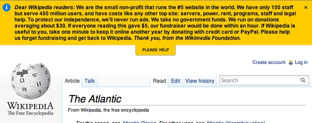
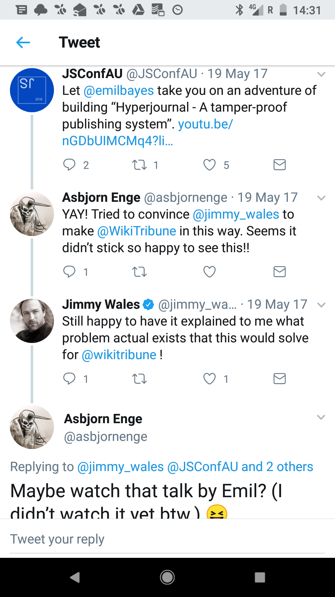

mathias buus
@mafintosh
dat project
wikis
wikis
wikis
wikis
wikis
wikis
in search for a killer app on the internet ...
that isn't about images ...
or videos ...
the wiki
wiki is the hawaiian word for quick
an application that allows users to quickly update and share knowledge
users, not experts.
Created by Ward Cunningham
wikipedia!
One of the best apps on the internet
Created by Jimmy Wales
The guy who once a year asks for your money

Wikipedia isn't cheap to run.
Staff is expensive
Servers are expensive
Over time bandwidth and storage is very expensive
p2p wikis?
https://github.com/mafintosh/peerwiki

why?
peers can pay with bandwidth and storage
a p2p system with only one peer still works
offline viewing of things you've seen
why not?
privacy?
updates / edits ?
https://github.com/mafintosh/hyperwiki
thank you!